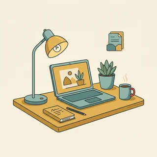

deutschoderwas · Sprechclub · Woche 7 · Strang D · Teil 1 · Dienstag, 27. Oktober
Über sich selbst sprechen: Stärken nennen ohne Angeberei
„Was können Sie gut?“ ist die Frage, bei der die meisten stumm werden — nicht wegen der Sprache, sondern weil sie Angst haben, überheblich zu wirken. Dabei gibt es im Deutschen einen einfachen Weg dazwischen: Man nennt keine Eigenschaft, sondern erzählt eine Situation. Wer sagt, was er getan hat, muss nicht sagen, wie gut er ist — das macht der Zuhörer von allein.
Dein Niveau
Gleiches Thema, andere Sätze. Wechsle jederzeit — probier ruhig beide Seiten aus.
Warum diese Frage so schwer ist
In vielen Ländern gehört es sich, die eigenen Leistungen klar zu nennen. In Deutschland gilt bis heute ein leiser Ton als Zeichen von Können — aber nur bis zu einem bestimmten Punkt. Wer gar nichts über sich sagt, wirkt nicht bescheiden, sondern unsicher. Zwischen Angeberei und Schweigen liegt ein schmaler Weg, und der lässt sich lernen.
Was kannst du gut? Sag es in einem Satz.
Fällt es dir leichter, über andere oder über dich selbst zu sprechen?
Wer hat dir schon einmal gesagt, was du gut kannst?
Wie spricht man in deinem Land über die eigenen Stärken?
Wann wirkt Bescheidenheit sympathisch — und wann eher unsicher?
Woran erkennst du, dass jemand angibt und nicht einfach nur erzählt?
🔑 Die Regel des Abends: Nenn keine Eigenschaft, sondern eine Situation. Nicht Ich bin sehr organisiert, sondern Bei uns hat niemand die Termine im Blick behalten, also habe ich eine Liste geführt. Das Urteil überlässt du dem anderen — und genau deshalb glaubt er es.
Sagen, was war — nicht, wie gut man ist
Eine Eigenschaft ist eine Behauptung: Man kann ihr zustimmen oder nicht. Eine Situation ist eine Erzählung: Ihr hört man zu. Deshalb wirkt Ich habe die Übergabe für drei Kolleginnen vorbereitet stärker als jedes Adjektiv — obwohl darin kein einziges Lob vorkommt.

Erzähl von einer Situation, in der du jemandem geholfen hast.
Was hast du in den letzten Wochen gut gemacht?
Was sagen deine Freunde über dich?
Welche Situation aus deinem Leben zeigt eine Stärke, ohne dass du sie benennen musst?
Warum überzeugt eine Geschichte mehr als ein Adjektiv?
Wo ist die Grenze zwischen Erzählen und Angeben?
💡 Drei Wörter, die alles ändern:damals, dabei, seitdem. Sie machen aus einer Behauptung eine Geschichte — und Geschichten widerspricht niemand.
Zwölf Wörter, mit denen du über dich sprichst
Sag jedes Wort laut — mit Artikel. Und häng gleich einen eigenen Satz an, der mit Ich anfängt.
die Stärke
„Meine größte Stärke ist, dass ich ruhig bleibe.“
💡 Der Plural heißt die Stärken. Und pass auf das andere Wort auf: die Stärke ist auch die Kraft von etwas — die Stärke des Kaffees. Im Gespräch über dich meint es immer die Fähigkeit.
das Beispiel
„Ich gebe Ihnen ein Beispiel aus meinem letzten Job.“
💡 Das wichtigste Wort des Abends. Ein Beispiel geben oder nennen — beides geht. Und die Wendung zum Beispiel schreibt man aus, wenn man spricht.
belegen
„Diese Stärke kann ich mit einem Beispiel belegen.“
💡 Das Verb für alles, was du behauptest. Etwas mit etwas belegen. Achtung, zwei Bedeutungen: einen Platz belegen heißt besetzen, einen Kurs belegen heißt teilnehmen.
untertreiben
„Sie untertreibt immer — dabei hat sie das Projekt geleitet.“
💡 Das Gegenteil ist übertreiben. Beide sind untrennbar: ich untertreibe, ich habe untertrieben. Und merk dir die feine Warnung: Zu viel Untertreibung wirkt nicht bescheiden, sondern unsicher.
das Auftreten
„Ihr Auftreten ist freundlich und trotzdem klar.“
💡 Ein Nomen aus einem Verb — deshalb das. Dazu gehört sicher auftreten. Es geht nicht darum, was du sagst, sondern wie du dabei wirkst.
die Ausstrahlung
„Er hat eine ruhige Ausstrahlung, das merkt jeder sofort.“
💡 Ein sehr deutsches Wort — schwer zu übersetzen, aber im Alltag häufig. Es hat kein richtiges Plural. Sag lieber eine ruhige oder eine offene Ausstrahlung als eine gute.
sorgfältig
„Ich arbeite lieber sorgfältig als schnell.“
💡 Das Adjektiv, das im Deutschen als Lob gilt, ohne nach Angeberei zu klingen. Das Nomen heißt die Sorgfalt. Verwechsle es nicht mit sorgenvoll — das heißt besorgt.
zuverlässig
„Was ich zusage, mache ich auch — ich bin sehr zuverlässig.“
💡 In Deutschland fast die wichtigste Eigenschaft überhaupt. Dazu sich auf jemanden verlassen (mit auf + Akkusativ) und das Nomen die Zuverlässigkeit.
sich vorstellen
„Darf ich mich kurz vorstellen?“
💡 Reflexiv und trennbar: ich stelle mich vor. Und beachte den Unterschied: sich vorstellen mit Dativ heißt sich etwas ausdenken — Das kann ich mir vorstellen.
das Vorstellungsgespräch
„Im Vorstellungsgespräch kommt diese Frage fast immer.“
💡 Ein Wort aus drei Teilen — sprich es in Portionen: Vorstellungs-gespräch. Dazu gehören sich bewerben um und die Bewerbung.
die Weiterbildung
„Ich habe nebenbei eine Weiterbildung gemacht.“
💡 Immer eine Weiterbildung machen, nicht studieren. Ein schöner bescheidener Satz damit: Das habe ich mir in einer Weiterbildung angeeignet.
die Zusammenarbeit
„Die Zusammenarbeit mit dem Team hat mir am meisten gebracht.“
💡 Das Wort, mit dem du eine Stärke teilen kannst, ohne sie kleiner zu machen: In der Zusammenarbeit übernehme ich meistens die Planung. Dazu zusammenarbeiten mit + Dativ.
💡 Spiel „Zeig es, sag es nicht“: Zieht ein Wort. Ihr müsst eine Situation aus eurem Leben erzählen, in der diese Stärke sichtbar wird — ohne das Wort selbst zu benutzen. Die anderen raten, welches Wort gemeint war. Wer das Wort sagt, hat verloren.
Behauptung, Beispiel oder fremdes Lob?
Es gibt drei Arten, eine Stärke zu nennen — und sie klingen völlig verschieden. Die erste ist die schwächste, obwohl sie am selbstbewusstesten wirkt. Die dritte ist die stärkste, obwohl du dich darin gar nicht selbst lobst.
📣
die Behauptung
eine Eigenschaft, einfach genannt
Ich bin sehr organisiert.
🧾
das Beispiel
eine Situation statt eines Adjektivs
Ich habe für drei Kolleginnen die Übergabe vorbereitet.
🗣️
das fremde Lob
was andere über dich gesagt haben
Meine Chefin hat mich immer gefragt, wenn es eilig war.
✅ Wirkt souverän
Als bei uns zwei Kolleginnen gleichzeitig ausgefallen sind, habe ich die Termine übernommen. Danach ist es dabei geblieben.
Warum das funktioniertKein einziges Adjektiv — und trotzdem weiß der Zuhörer jetzt, dass du belastbar und zuverlässig bist. Das Urteil hat er selbst gebildet, und deshalb glaubt er es.
❌ Wirkt nach Angeberei
Ich bin extrem belastbar und behalte immer den Überblick.
Das ProblemZwei Superlative in einem Satz, und nichts dahinter. Extrem und immer sind genau die Wörter, bei denen Zuhörer im Deutschen misstrauisch werden.
✅ Wirkt souverän
Das Feedback, das ich am häufigsten bekomme, ist, dass ich gut zuhören kann.
Warum das funktioniertEin fremdes Lob. Du sagst es über dich, aber nicht von dir aus — deshalb darf es sogar deutlich sein, ohne unangenehm zu werden.
❌ Wirkt nach Angeberei
Alle sagen, dass ich der beste Zuhörer im Team bin.
Das ProblemAlle und der beste. Sobald ein Lob unüberprüfbar groß wird, hört der andere nicht mehr das Lob, sondern das Bedürfnis danach.
✅ Wirkt souverän
Schnelligkeit ist nicht meine Stärke — dafür passiert mir selten ein Fehler.
Warum das funktioniertEine Einschränkung macht die Stärke glaubwürdig. Wer sagt, was er nicht ist, wirkt sofort ehrlicher bei dem, was er ist — mehr dazu am Donnerstag.
❌ Wirkt nach Angeberei
Ich bin eigentlich in allem ziemlich gut.
Das ProblemEin Satz ohne Grenzen sagt nichts. Und im Deutschen gilt: Wer in allem gut ist, hat entweder wenig gemacht oder wenig darüber nachgedacht.
Drei Sätze, immer in dieser Reihenfolge:
Die Stärke: ein Satz, ruhig und ohne Superlativ. Ich bin jemand, der gern strukturiert arbeitet.
Die Situation: ein konkreter Fall. In meinem letzten Job habe ich die Übergaben geplant.
Die Folge: was dabei herauskam. Seitdem gibt es dafür eine feste Liste.
Und wenn dir gar nichts einfällt, hilft immer dieser Einstieg: „Am ehesten würde ich sagen, dass …“ Er klingt überlegt statt unsicher — und verschafft dir drei Sekunden zum Nachdenken.
🎯 Zu zweit, eine Minute: Einer nennt eine Eigenschaft (geduldig, ordentlich, mutig), der andere macht sofort ein Beispiel daraus — eine Situation, in der man es sehen konnte. Danach tauschen. Ihr werdet merken: Das Beispiel klingt jedes Mal besser als das Wort.
Vier Bausteine für den richtigen Ton
Anfangen, ein Beispiel geben, ein fremdes Lob nennen, abschwächen. Vier Handgriffe — und aus einer unangenehmen Frage wird eine Antwort, die sitzt.
1 · 🧭 Anfangen Ich bin jemand, der …Was ich gut kann, ist …Ich arbeite gern …Mir liegt besonders …
So klingt esIch bin jemand, der gern in Ruhe arbeitet.
2 · 🧾 Beispiel geben Zum Beispiel habe ich …In meinem letzten Job …Einmal war es so, dass …Damals habe ich …
So klingt esIn meinem letzten Job habe ich die Dienstpläne geschrieben.
3 · 🗣️ Fremdes Lob Meine Kollegen sagen, dass …Man hat mir oft gesagt, …Meine Chefin hat mich gefragt, weil …Das höre ich häufiger.
So klingt esMeine Kollegen sagen, dass ich gut erklären kann.
4 · 🪶 Abschwächen Ich glaube, …So ungefähr jedenfalls.Zumindest sagt man mir das.Das fällt mir eher leicht.
So klingt esZahlen fallen mir eher leicht — zumindest sagt man mir das.
1 · 🧭 Präziser Einstieg Am ehesten würde ich sagen, dass …Wenn ich eine Sache nennen müsste, dann …Was mir liegt, ist die Arbeit mit …Ich sehe meine Stärke eher in …
So klingt esWenn ich eine Sache nennen müsste, dann die Ruhe in Situationen, in denen es eng wird.
2 · 🧾 Beleg mit Folge Konkret sah das so aus:Daraus ist entstanden, dass …Seitdem läuft das bei uns so, dass …Das Ergebnis war, dass …
So klingt esKonkret sah das so aus: Ich habe eine Übergabeliste angelegt — seitdem arbeitet die ganze Schicht damit.
3 · 🗣️ Fremde Stimme Das Feedback, das ich am häufigsten bekomme, ist …Man kommt eher zu mir, wenn …In Beurteilungen stand meist, dass …Offenbar wirke ich so, denn …
So klingt esMan kommt eher zu mir, wenn etwas schiefgegangen ist — offenbar traut man mir zu, dass ich nicht laut werde.
4 · 🪶 Fein abschwächen Das würde ich nicht überbewerten, aber …In diesem Punkt bin ich einigermaßen sicher.Das gilt für … , nicht generell.Ich halte mich da für solide, nicht für herausragend.
So klingt esIch halte mich da für solide, nicht für herausragend — aber es reicht, damit sich andere darauf verlassen können.
Verb die Stärke der Beleg Höflichkeit
📣 Sofort anwenden: Nimm eine echte Stärke von dir und sag alle vier Bausteine hintereinander — Einstieg, Beispiel, fremdes Lob, Abschwächung. Vier Sätze. Genau so lang darf die Antwort im Vorstellungsgespräch sein.
Vier Situationen — zwei Runden
Runde 1: Lest den Dialog zu zweit laut. Runde 2: Klappt die Zeilen zu und sprecht frei — nur die Stichwörter bleiben.
Dialog 1 · „Im Vorstellungsgespräch“
Die klassische Frage kommt nach zehn Minuten. A fragt, B antwortet — ohne Adjektivsalat und ohne Untertreibung.
A
Was würden Sie als Ihre größte Stärke bezeichnen?
B
Am ehesten würde ich sagen, dass ich jemand bin, der ruhig bleibt, wenn es eng wird.
🗣️ Am ehesten würde ich sagen ist der beste Einstieg, den es gibt: überlegt statt unsicher. Und danach ein Relativsatz — jemand, der …tippen = Hilfe zeigen
A
Haben Sie dafür ein Beispiel?
B
In meinem letzten Job sind zwei Kolleginnen gleichzeitig ausgefallen. Ich habe die Termine übernommen und eine Liste angelegt, mit der wir bis heute arbeiten.
🗣️ Situation, Handlung, Folge — in dieser Reihenfolge. Beachte den Relativsatz am Ende: eine Liste, mit der wir arbeiten. Nach mit steht der Dativ.tippen = Hilfe zeigen
A
Und was sagen Ihre Kolleginnen über Sie?
B
Das Feedback, das ich am häufigsten bekomme, ist, dass man mich fragen kann, ohne sich dumm zu fühlen.
🗣️ Fremdes Lob wirkt immer stärker als eigenes. Das Feedback, das ich bekomme — Relativpronomen im Akkusativ, weil man das Feedback bekommt.tippen = Hilfe zeigen
Dialog 2 · „Das Mitarbeitergespräch“
Einmal im Jahr sitzt man beim Chef und soll sagen, was gut gelaufen ist. B hat sich vorbereitet — und untertreibt trotzdem fast.
A
Was ist Ihnen dieses Jahr besonders gut gelungen?
B
Die Einarbeitung der beiden Neuen. Das war eigentlich nicht meine Aufgabe, aber es hat gut funktioniert.
🗣️ Vorsicht mit eigentlich — es schwächt ab. Ein Mal ist charmant, zwei Mal klingt nach Entschuldigung dafür, dass man etwas gut gemacht hat.tippen = Hilfe zeigen
A
Das haben mir beide auch zurückgemeldet.
B
Das freut mich zu hören. Ich hatte damals selbst eine Einarbeitung, die ziemlich chaotisch war — das wollte ich anders machen.
🗣️ Das freut mich zu hören statt ach, das war doch nichts. Ein Lob anzunehmen ist im Deutschen kein Angeben, sondern Höflichkeit.tippen = Hilfe zeigen
A
Wollen Sie das im nächsten Jahr fest übernehmen?
B
Gern — vorausgesetzt, ich bekomme die Zeit dafür, die dieser Bereich wirklich braucht.
🗣️ Ja sagen und gleichzeitig eine Bedingung nennen. Der Relativsatz die Zeit, die dieser Bereich braucht macht die Forderung sachlich statt fordernd.tippen = Hilfe zeigen
Dialog 3 · „Die Vorstellungsrunde“
Erster Tag im Kurs oder im Team. Jeder soll zwei Sätze über sich sagen — und die meisten sagen entweder zu wenig oder zu viel.
A
Möchten Sie sich kurz vorstellen?
B
Gern. Ich bin Nadia, ich komme aus Marokko und arbeite seit zwei Jahren in der Pflege.
🗣️ Drei Angaben, kein Adjektiv. Name, Herkunft, Tätigkeit — das reicht für den Anfang und lässt Fragen offen.tippen = Hilfe zeigen
A
Und was machen Sie am liebsten?
B
Alles, was mit Menschen zu tun hat, die gerade nicht weiterwissen. Papierkram liegt mir weniger.
🗣️ Alles, was … — nach alles steht immer was, nie das. Und der zweite Satz nimmt der Antwort sofort jede Angeberei.tippen = Hilfe zeigen
A
Das trifft sich gut, im Team fehlt genau das.
B
Dann bin ich froh, dass ich es gesagt habe. Sonst hätte ich das nächste halbe Jahr Formulare ausgefüllt.
🗣️ Humor ist die eleganteste Form der Bescheidenheit. Wer über sich selbst lächeln kann, wirkt nie überheblich.tippen = Hilfe zeigen
Dialog 4 · „Unter Freunden“
A soll sich auf ein Gespräch vorbereiten und findet, dass sie eigentlich nichts kann. B hört zu und dreht die Sache um.
A
Ich soll morgen sagen, was meine Stärken sind. Mir fällt einfach nichts ein.
B
Dann frag andersherum: Wofür kommen die Leute zu dir, die dich kennen?
🗣️ Der beste Trick gegen die Leere im Kopf. Der Relativsatz die Leute, die dich kennen steht im Nominativ — sie kennen dich, sie sind das Subjekt.tippen = Hilfe zeigen
A
Wenn etwas kaputt ist. Oder wenn jemand ein Formular nicht versteht.
B
Genau das ist deine Stärke. Du bist jemand, dem man ein Problem geben kann, ohne es zu erklären.
🗣️ jemand, dem man … — hier steht das Relativpronomen im Dativ, weil man jemandem etwas gibt. Genau das üben wir gleich.tippen = Hilfe zeigen
A
So habe ich das noch nie gesehen.
B
Sag morgen genau diesen Satz — und dann ein Beispiel dazu. Mehr braucht es nicht.
🗣️ Stärke plus Beispiel. Das ist die ganze Struktur des heutigen Abends, in zwei Sätzen.tippen = Hilfe zeigen
🎭 Und jetzt ihr: Spielt Dialog 1 mit euren eigenen Antworten. Regel: In jeder Antwort muss ein Relativsatz vorkommen — Ich bin jemand, der … / Das Feedback, das ich bekomme, …
🧩 Ich bin jemand, der — die Relativsätze
Es gibt einen Satzbau, mit dem du über dich sprechen kannst, ohne dich selbst zu loben: Ich bin jemand, der … Der Relativsatz beschreibt statt zu bewerten — und genau deshalb klingt er nie nach Angeberei.
Ein Relativsatz erklärt ein Wort, das vorher steht. Zwei Dinge musst du wissen, und mehr nicht: Das Relativpronomen nimmt Geschlecht und Zahl vom Wort davor — der Kollege, die Kollegin, das Team. Seinen Fall bekommt es aber aus dem Nebensatz selbst. Und wie in jedem Nebensatz wandert das Verb ganz ans Ende.
🅰️Das Wort davorIch bin jemand, …
▾
🅱️Geschlecht und Zahl von dortder Kollege → der · die Liste → die
▾
🅲Der Fall kommt aus dem Nebensatzman gibt ihm etwas → dem
▾
🅳Verb ans Ende… der gern strukturiert arbeitet.
BezugswortIch bin jemand,
Relativpronomender
Rest des Satzesgern strukturiert
Verb ans Endearbeitet.
Der, den oder dem — woher kommt die Form?
Immer dieselbe Frage: Welche Rolle spielt das Wort im Nebensatz? Ist es dort das Subjekt, steht der Nominativ. Ist es das Objekt, der Akkusativ. Steht ein Verb mit Dativ dabei, der Dativ. Sag die drei Sätze unten laut — der Unterschied liegt in einem einzigen Buchstaben.
1️⃣
Nominativ: der, die, das
das Wort ist im Nebensatz das Subjekt
Ich bin jemand, der gern erklärt.
2️⃣
Akkusativ: den, die, das
das Wort ist im Nebensatz das Objekt
Das ist eine Aufgabe, die ich gern übernehme.
3️⃣
Dativ: dem, der, denen
das Verb im Nebensatz verlangt den Dativ
Ich bin jemand, dem man Probleme geben kann.
ein Kollege, der viel fragtein Kollege, den alle fragenein Kollege, dem alle vertraueneine Liste, die wir führenein Team, das gut zusammenarbeitetLeute, denen man vertrauen kann
Mit Präposition — und das kleine was
Zwei Sonderfälle, die im Gespräch über dich ständig vorkommen. Steht eine Präposition dabei, rutscht sie vor das Relativpronomen: eine Liste, mit der wir arbeiten. Und nach alles, etwas, nichts und das heißt es nicht das, sondern was.
🔗
Präposition kommt vorn
und sie bestimmt den Fall
eine Liste, mit der wir arbeiten
🅾️
alles, etwas, nichts
danach immer was
alles, was mit Zahlen zu tun hat
💬
Komma nicht vergessen
vor jedem Relativsatz steht eines
Ich bin jemand, der zuhört.
die Liste, mit der wir arbeitendas Team, in dem ich wardie Aufgabe, für die ich zuständig binalles, was mit Menschen zu tun hatetwas, was mir liegtdas Einzige, was mir schwerfällt
🧱 Bau die Sätze selbst
Tippe die Teile in der richtigen Reihenfolge an. Merk dir die zwei Regeln: Das Relativpronomen steht direkt nach dem Komma, und das Verb steht ganz am Ende.
📖 Und jetzt im Zusammenhang
Eine Vorbereitung auf ein Gespräch, das am nächsten Morgen stattfindet. Wähle für jede Lücke das passende Relativpronomen.
Zwei Fragen, in dieser Reihenfolge — dann stimmt es immer:
Erste Frage: Welches Geschlecht hat das Wort davor? der Kollege, die Aufgabe, das Team.
Zweite Frage: Was tut oder bekommt es im Nebensatz? Handelt es selbst → Nominativ. Wird es behandelt → Akkusativ.
Verb mit Dativ? (helfen, vertrauen, gefallen, geben) Dann Dativ: ein Kollege, dem alle vertrauen.
Plural im Dativ ist der einzige Sonderfall: denen. Leute, denen man vertrauen kann.
Ein Satz, an dem du alles gleichzeitig übst: „Ich bin jemand, der gern erklärt, dem man alles fragen kann und der Aufgaben mag, die niemand will.“ Nominativ, Dativ, Akkusativ — in einem einzigen Satz über dich.
🎭 Drei Situationen zu zweit
Einer fragt, einer antwortet. Danach tauschen — und beim zweiten Mal ohne die Sätze unten. Regel für beide Runden: In jeder Antwort muss ein Relativsatz und ein Beispiel vorkommen.
1 · Das Vorstellungsgespräch
A führt das Gespräch und fragt nach Stärken, nach einem Beispiel und danach, was andere sagen. B antwortet — ohne Superlative und ohne sich kleinzumachen.
Ich bin jemand, der gern in Ruhe arbeitetZum Beispiel habe ich bei uns die Dienstpläne gemachtMeine Kollegen sagen, dass ich gut zuhören kannDas fällt mir eher leicht
Am ehesten würde ich sagen, dass ich in unruhigen Situationen ruhig bleibeKonkret sah das so aus: Ich habe eine Übergabeliste angelegt, mit der wir bis heute arbeitenDas Feedback, das ich am häufigsten bekomme, ist, dass man mich alles fragen kannIch halte mich da für solide, nicht für herausragend
✅ Eine gute Runde enthältB hat mindestens ein Beispiel mit einer Folge genannt und kein einziges Adjektiv allein stehen lassen. Es kam kein immer, kein extrem, kein der Beste vor — und trotzdem weiß A jetzt genau, was B kann.
2 · Der neue Kurs
Erster Abend, Vorstellungsrunde. A stellt die üblichen Fragen: Wer bist du, was machst du, warum bist du hier? B antwortet in drei Sätzen, nicht in dreißig.
Ich heiße … und komme aus …Ich arbeite seit … in …Was ich gut kann, ist …Ich bin hier, weil ich freier sprechen möchte
Ich bin jemand, der lieber zuhört — heute mache ich eine AusnahmeBeruflich habe ich mit Menschen zu tun, die gerade nicht weiterwissenAlles, was mit Erklären zu tun hat, liegt mirWoran ich arbeiten möchte, ist das Sprechen unter Zeitdruck
✅ Eine gute Runde enthältB hat drei bis vier Sätze gesagt, nicht mehr — und mindestens einen davon mit alles, was oder jemand, der gebaut. A konnte danach eine echte Rückfrage stellen, weil etwas offengeblieben ist.
3 · Die Empfehlung
A sucht jemanden für eine Aufgabe im Team und fragt B, ob B sich das zutraut. B möchte gern — will aber nicht so klingen, als sei es selbstverständlich.
Ich würde das gern machenSo etwas habe ich schon einmal gemachtIch brauche dafür aber ein bisschen ZeitWenn etwas unklar ist, frage ich nach
Das würde ich mir zutrauen — mit einer EinschränkungIch habe etwas Ähnliches gemacht, allerdings in kleinerem RahmenWas ich dafür bräuchte, wäre eine Ansprechpartnerin für die ersten WochenIch sage lieber vorher, was ich noch nicht kann, als hinterher
✅ Eine gute Runde enthältB hat zugesagt, ohne zu übertreiben, und eine Bedingung genannt, ohne zu jammern. Mindestens ein Satz begann mit Was ich … — und A weiß jetzt, worauf er sich verlassen kann.
🎴 Sprechkarten
Zieh eine Karte und sprich mindestens vier Sätze am Stück.
Deine Aufgabe
Tippe auf den Knopf.
⏱️ Die 90-Sekunden-Challenge
Eine Minute über dich selbst — Stärke, Beispiel, fremdes Lob. Kein Adjektiv darf allein stehen bleiben, jedes braucht eine Situation dahinter.
Dein Wort
die Stärke
1:30
Geh diese vier Schritte entlang, dann trägt dich die Minute von allein:
Wofür kommen andere zu dir? Das ist deine Stärke, auch wenn sie dir selbstverständlich vorkommt.
Wann war das zuletzt so? Diese Situation ist dein Beispiel.
Was hat jemand danach gesagt? Das ist dein fremdes Lob.
Was kannst du nicht so gut? Ein Satz reicht — er macht alles davor glaubwürdig.
Und wenn du mitten im Satz stecken bleibst, gibt es einen Retter, der nie unangenehm klingt: „Wie sage ich das … am ehesten so:“ Danach hast du drei Sekunden und die volle Aufmerksamkeit.
⏱️ Spielregel: In jeder Runde müssen ein Relativsatz und ein konkretes Beispiel vorkommen. Wer ein Adjektiv ohne Situation nennt, fängt von vorne an.
✅ Sitzt es schon?
8 Fragen. Tippe auf deine Antwort — die Erklärung kommt sofort.
✍️ Lückentext
Wähle in jeder Lücke das passende Wort.
📣 Danach laut: Einer nennt reihum ein Nomen (eine Kollegin, ein Team, eine Aufgabe), der Nachbar baut sofort einen Relativsatz dazu — und sagt, in welchem Fall das Pronomen steht. Wer bei das Team, den ich mag landet, gibt weiter.
📮 Deine Hausaufgabe bis Donnerstag
Vier kleine Aufgaben, zusammen etwa 25 Minuten. Am Donnerstag drehen wir die Frage um: Was man nicht kann — und wie man es freundlich sagt.
💡 Warum das hilft: Über die eigenen Stärken zu sprechen ist keine Charakterfrage, sondern eine Übungssache. Wer den Satz Ich bin jemand, der … zwanzigmal gesagt hat, sagt ihn beim einundzwanzigsten Mal auch dann, wenn jemand gegenübersitzt, der über eine Stelle entscheidet.
0 von 0 Aufgaben geschafft.
So wird aus einem Adjektiv eine Situation:
geduldig → Ich habe meiner Nachbarin dreimal dasselbe Formular erklärt.
ordentlich → Bei mir findet auch jemand anders sofort die richtige Mappe.
hilfsbereit → Wenn jemand kurzfristig ausfällt, springe ich meistens ein.
ruhig → Als der Drucker mitten in der Abgabe streikte, habe ich einfach angefangen zu telefonieren.
neugierig → Ich habe das neue Programm ausprobiert, bevor die Schulung stattfand.
Ein einziger Test: Kann man es sehen? Wenn ja, ist es eine Situation. Wenn nein, ist es noch ein Adjektiv.
So ist ein Vorstellungstext aufgebaut, der gelesen wird:
Der erste Satz: wer du bist und was du machst — ohne Adjektiv. Ich arbeite seit vier Jahren in der Altenpflege.
Die Station davor: ein Satz zur Herkunft deiner Erfahrung. Davor habe ich in Marokko in einer Apotheke gearbeitet.
Was dir liegt: mit Relativsatz, nicht mit Adjektiv. Am liebsten arbeite ich mit Menschen, die gerade nicht weiterwissen.
Ein Beleg: eine Situation mit Folge. Ich habe eine Übergabeliste angelegt, mit der die Schicht bis heute arbeitet.
Woran du arbeitest: ein Satz, ehrlich und ohne Drama. Das Sprechen unter Zeitdruck fällt mir noch schwer.
Und der Fehler, den fast alle machen: Adjektivketten. Motiviert, teamfähig, zuverlässig und belastbar steht in jeder zweiten Bewerbung und sagt nichts. Ein einziges Beispiel schlägt vier Adjektive.
📬 Abgabe: Schick deine Sprachnachricht und die Sätze bis Mittwochabend in den Chat. Ich höre alles an und schreibe dir zurück, was schon überzeugt und wo du dich noch kleiner machst, als du bist.
🔜 Am Donnerstag, Teil 2:Was man nicht kann — freundlich sagen. Heute ging es um die Stärken. Am Donnerstag um die andere Hälfte: Wie man eine Schwäche nennt, ohne sich zu entschuldigen — und warum das im Deutschen fast immer gut ankommt.